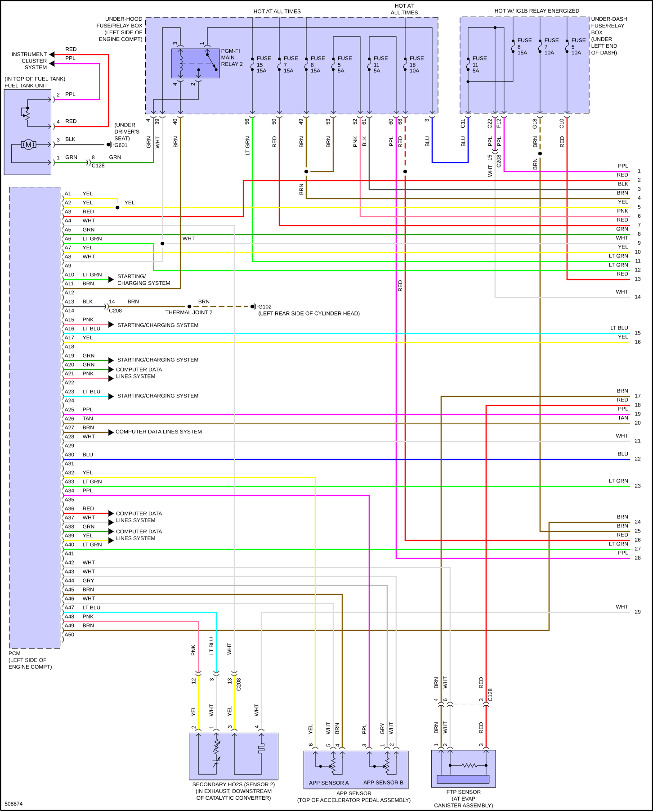
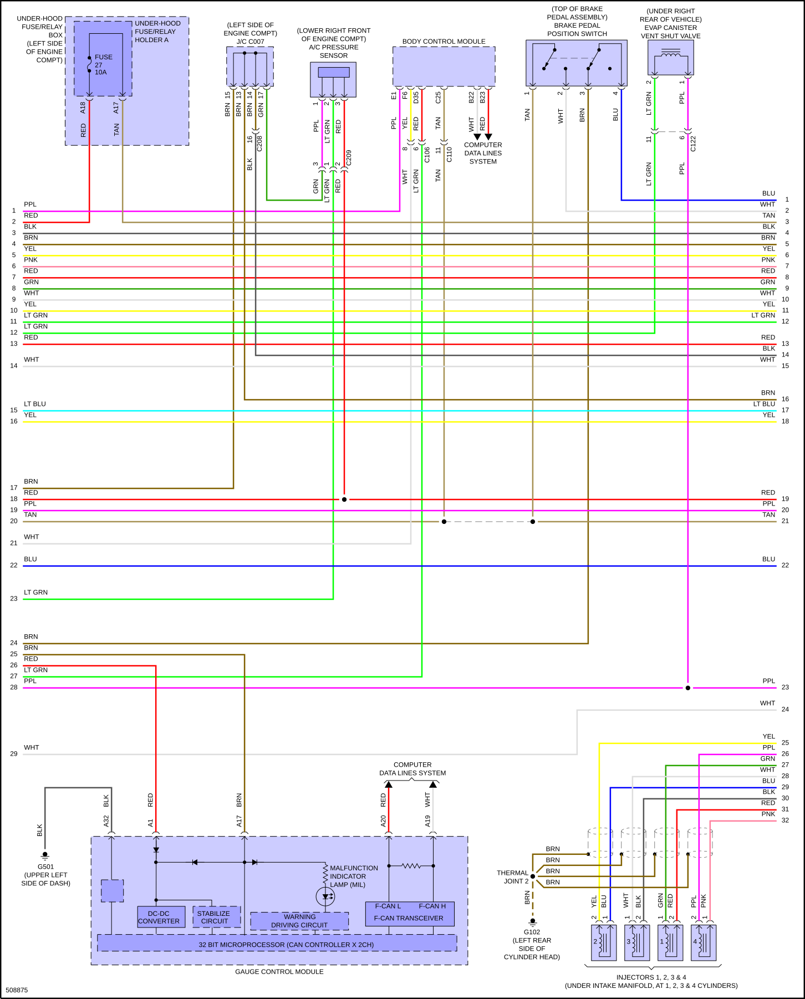
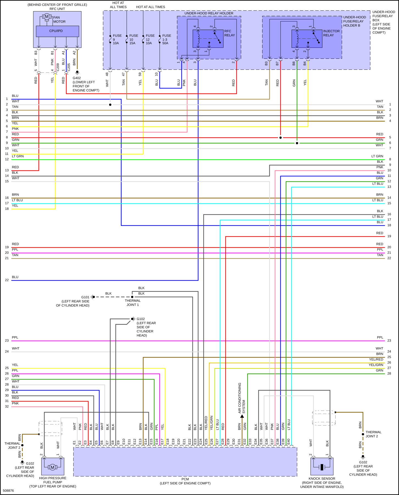
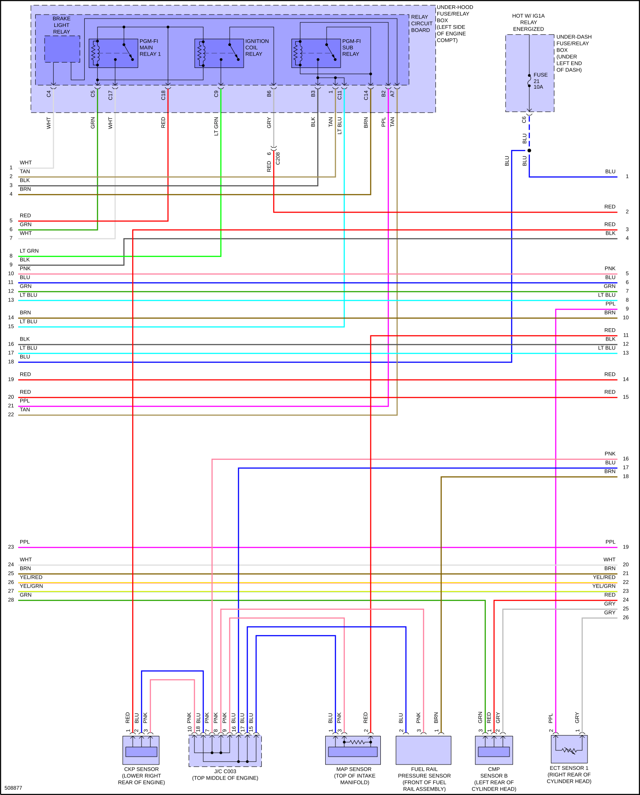
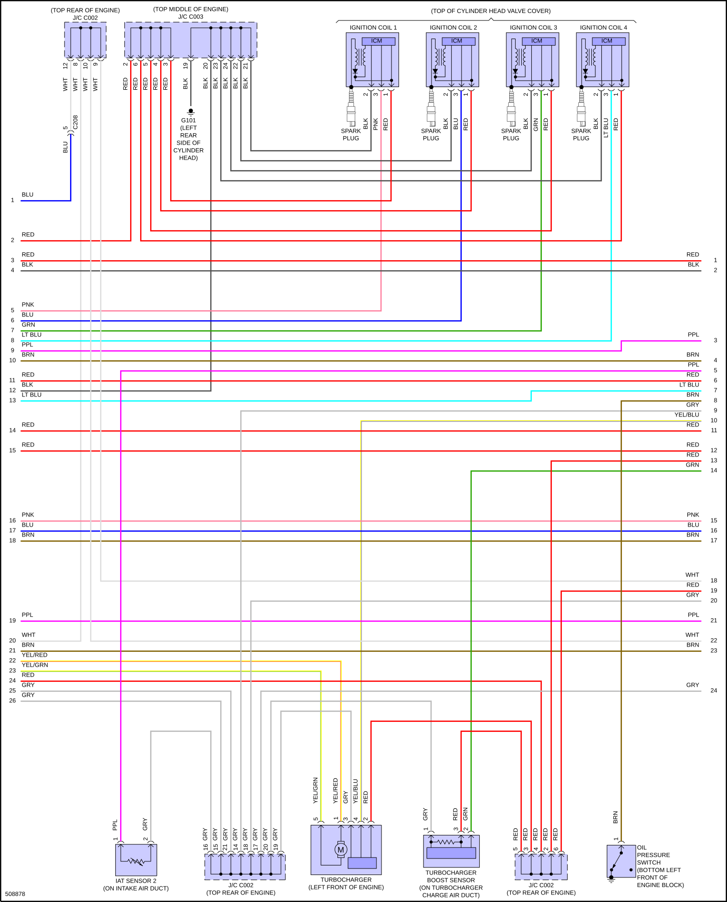
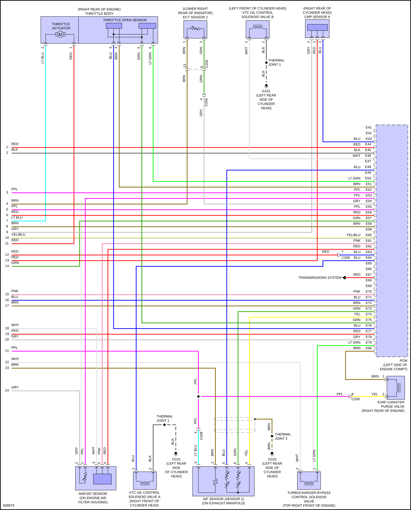

LEMON Manuals
: Even more car manuals for everyone: 1960-2025
Home
>>
Honda
>>
2016
>>
Civic LX, 4D Sedan, Automatic CVT Trans
>>
Repair and Diagnosis (Single Page)
>>
Quick Lookups
>>
Wiring Diagrams
>>
System Wiring Diagrams
>>
Engine Performance
>>
1.5L Turbo
1.5L Turbo
Fig 1: 1.5L Turbo, Engine Performance Circuit (1 of 6)

Fig 2: 1.5L Turbo, Engine Performance Circuit (2 of 6)

Fig 3: 1.5L Turbo, Engine Performance Circuit (3 of 6)

Fig 4: 1.5L Turbo, Engine Performance Circuit (4 of 6)

Fig 5: 1.5L Turbo, Engine Performance Circuit (5 of 6)

Fig 6: 1.5L Turbo, Engine Performance Circuit (6 of 6)
